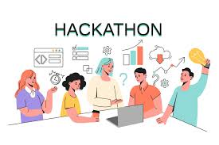

Why I Love Hackathons
Posted on Jan 1, 2025
Hackathons are more than just coding marathons; they are hubs of innovation, creativity, and teamwork. Here’s why I love them:
- Problem-solving: Hackathons challenge you to think critically and solve real-world problems.
- Collaboration: Working in teams helps develop interpersonal skills and build networks.
- Rapid Prototyping: The fast-paced environment fosters quick learning and adaptability.
- Skill Enhancement: Hands-on experience improves coding, design, and presentation skills.
My favorite hackathon memory was developing an AI-powered chatbot for personalized learning resources. This experience enhanced both my technical skills and teamwork abilities.